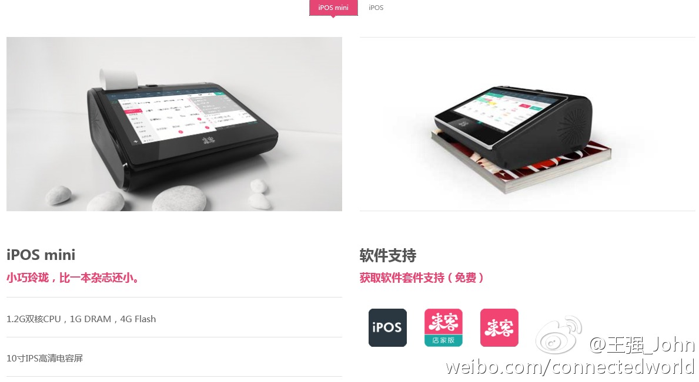
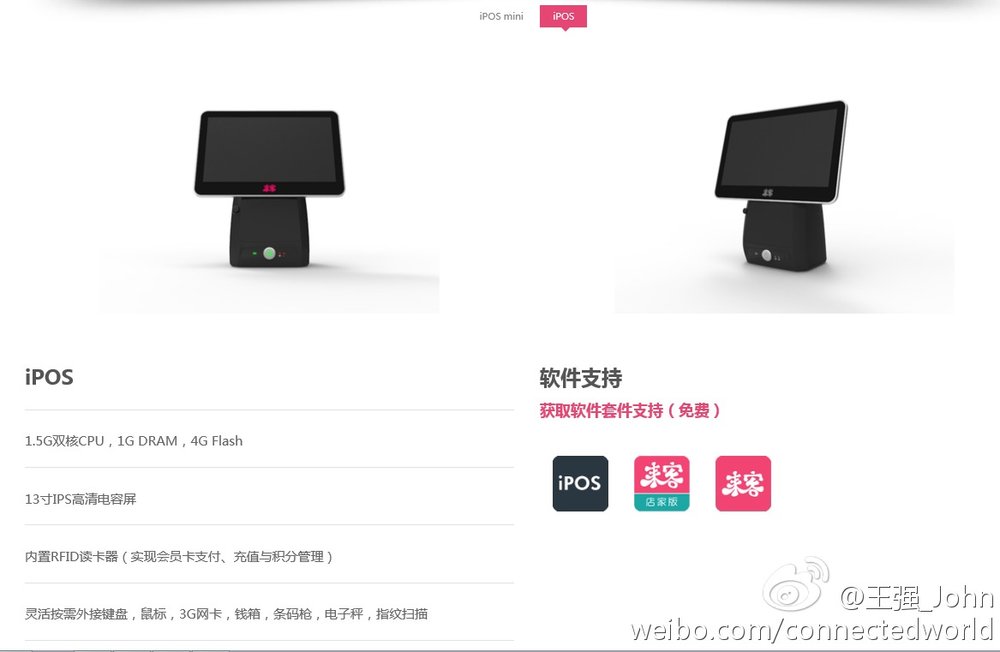

做成新硬件是产品，量做上去的的话还有机会。如果为平板开发软件，就只能做项目了。//@阿朱:为什么不用平板电脑搞，非要再弄个硬件？另外怎么和移动支付相结合呢？@王强_John:原来工作在O记得好友@91Dylan 投入了移动互联网创业大潮，和几个小伙伴们一起创立了“来客”。目标是通过他们的全新产品-互联网收银机iPOS来取代目前落后陈旧昂贵的传统收银机，一方面迎合了当前的移动支付将被广泛应用的趋势，同时还可以帮助店家完成从粗放型管理到精细化智能管理的蜕变。 